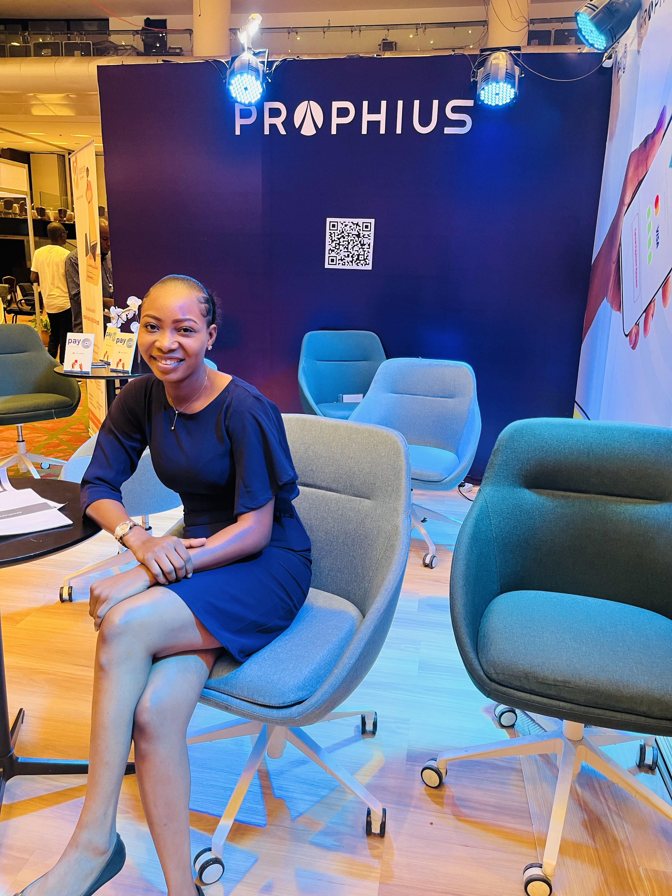
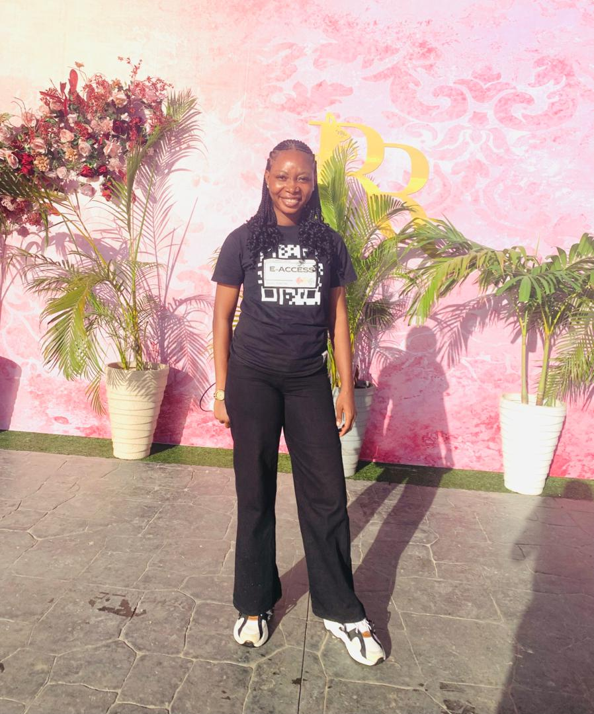
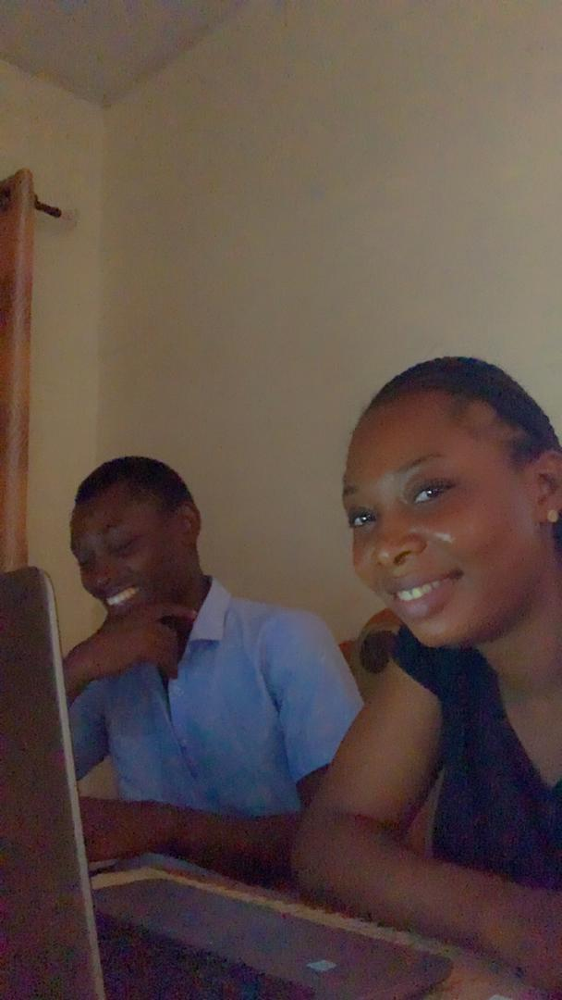
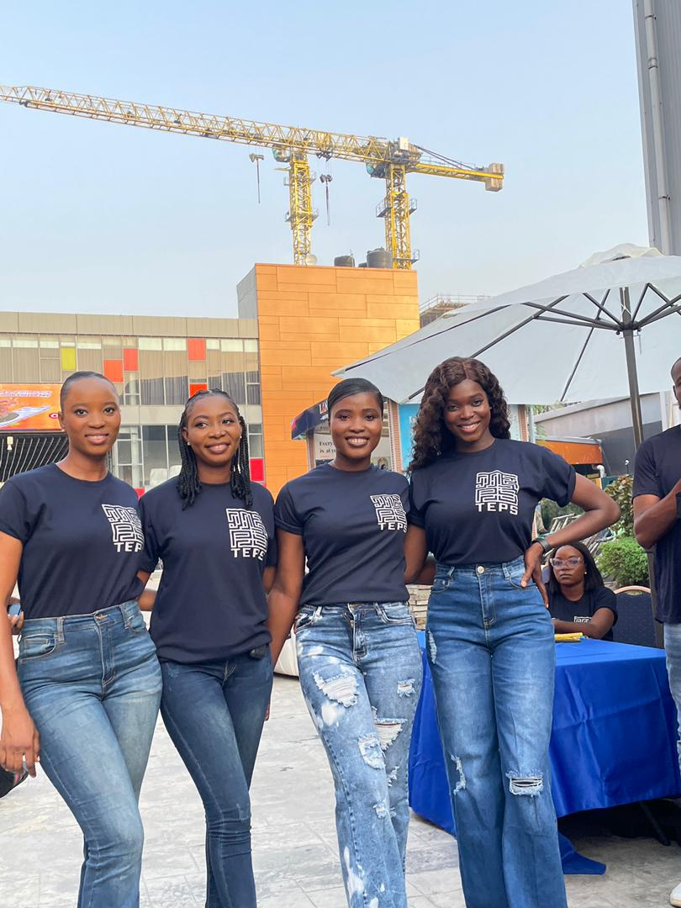
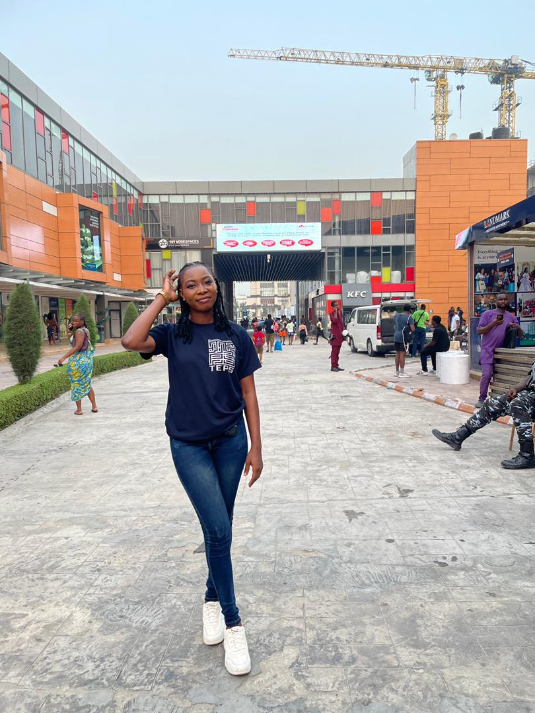

Career Objective
Frontend Developer passionate about building responsive, user-centered web applications and contributing to innovative projects that drive business growth.
Education
- HND in Computer Science – Kwara State Polytechnic, Ilorin
- ND in Computer Science – Kwara State Polytechnic, Ilorin
Certifications
- Advanced Frontend Development
Bincom Academy
- Mobile App Development
Bincom Academy
- Web Development with HTML and CSS for Beginners
Alison: Empower Yourself
- Building a Successful Business Website
Alison: Empower Yourself
- Post Graduate Diploma in Human Resource Management
Chartered Institute of Human Resources Management, State of Nevada, USA
- Post Graduate Diploma in Environmental Health and Safety
Chartered Institute of Environmental Health and Safety, State of Nevada, USA
Experience
Bincom Dev Center – Bincom Academy
Frontend Developer / Mobile Developer (Project-Based)
- Built and deployed responsive and user-friendly web and mobile applications.
- Collaborated on team projects simulating real work environments.
- Gained hands-on experience integrating REST APIs and optimizing app performance.
- Improved application quality and performance through effective debugging and testing.
NYSC – Administrative Assistant | INEC, Ogun State
- Coordinated sensitization and voter education workshops for electorates.
- Conducted surveys to identify improvement areas in local programs.
- Assisted in preparing reports on voter education programs and local outreach activities.
- Distributed PVCs to voters at wards and polling units.
Technical Skills
- HTML
- CSS
- JavaScript
- TypeScript
- React.js
- React Native
- Cordova
- Angular
- Ionic
- Firebase
- REST APIs
Soft Skills
- Effective Communication
- Attention to Detail
- Creativity & Problem-Solving
- Collaboration & Teamwork
- Excellent Time Management
Interests
- Reading & continous learning
- Stategic games (Chess, Scrabble)
- Traveling & cultural exploration
- Voluteering & community engagement
Photos




